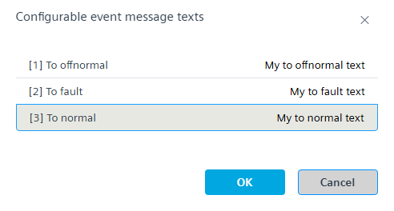
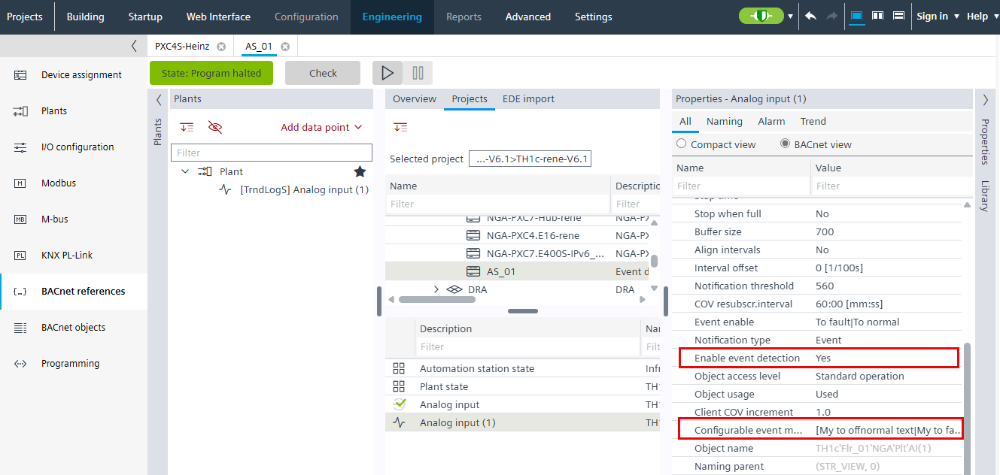
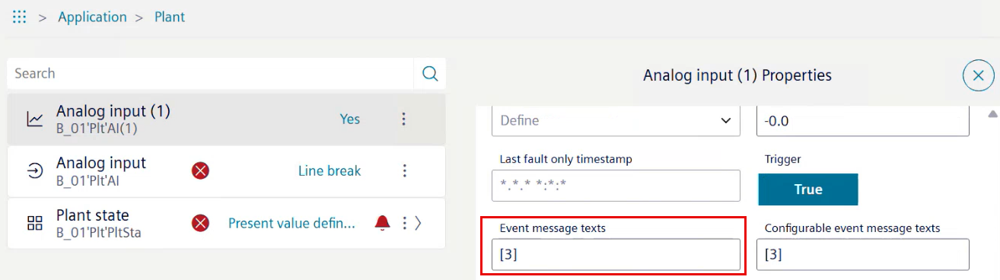

Customizing event message texts for a trend log object
The event message text can be used to define customer-specific event texts for each event status. The defined texts are forwarded to the management station or a printer when the event occurs.
- A trend log object is created.
- Go to Building > Building structure.
- Right-click a device and select Go to engineering.
- Open the BACnet references task.
- Select the trend log object.
- Select the Properties tab on the right.
- Select the All tab and then select the BACnet view option.
- Do the following:
- In the Name column, select Enable event detection.
- In the drop-down list, select Yes.
- Do the following:
- In the Name column, select Configurable event message.
Note: The maximum text length for all 3 entries is 255 characters. - In the [1] To offnormal field, enter a customized text.
- In the [2] To fault field, enter a customized text.
- In the [3] To normal field, enter a customized text.

- Select OK.


The Event message texts property is only visible online on the Web interface.
1. On the Web interface, select the trend log object and open the [data point] Properties list.
2. Select the Event message texts section to display the assigned customized texts.
